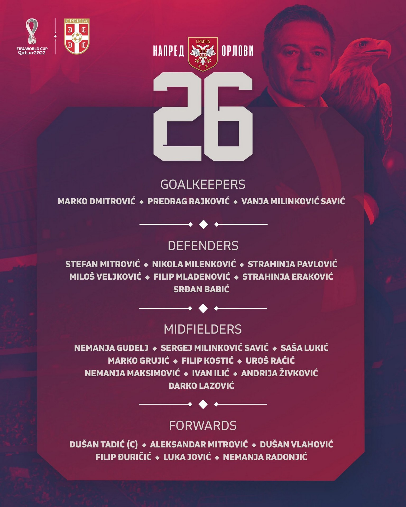
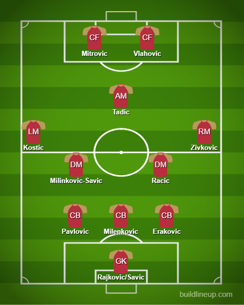

Squad Reaction - Serbia

In a group that contains Brazil, Cameroon and Switzerland. Honestly, I think they and Switzerland are genuine contenders for the second spot. Those 2 teams can cause an upset too. My lineup is solely based on their values so bear with me. In goal, a Milinkovic Savic could be trusted or Rajkovic. In defense, it’s a back 3 of the likes of Pavlovic, Milenkovic, Erakovic mostly with the usual Veljkovic injured with an unknown return date so let’s see if he’ll be back. In midfield it’s a set of 4. SMS should mostly start. Maybe alongside him, Racic could play or the likes of Ilic as well. Kostic will mostly for sure be at LM and Zivkovic at the right. Captain Tadic will be the lone CAM there. Upfront, it is a front 2 with Vlahovic and Mitrovic(He will mostly be back in time for the WC).
The lineup:
